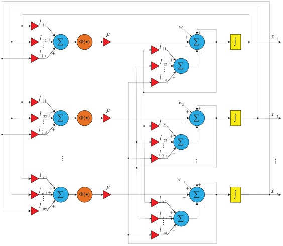

Funding: This project is funded by the Hunan Normal University Undergraduates Innovative Experiment Project, and I am the principal investigator.
Introduction: The consensus is a research hot-spot in the field of collaborative control. Each agent in the multi-agent systems is autonomous, can exchange information with adjacent nodes through the communication network, and reach a certain consensus under the control of the some certain control protocol. In this project, I mainly completed three works. Among them, my first and second work mainly focused on the classic problems in the field of collaborative control, and proposed fixed-time convergent and robust control protocols for the multi-agent consensus problem. In the third work, I innovatively applied fuzzy control theory to multi-agent consensus control, and proposed a fixed-Time, robust and fuzzy Adaptive consensus control model with event trigger mechanism. At present, there is no similar work on this, which is very innovative.

Description:
- Fixed-Time Consensus for Multiagent Systems Under Switching Topology: A Distributed Zeroing Neural Network-Based Method (Fixed-time Consensus)
Abstract: The zeroing neural network (ZNN) has been utilized in various control applications, such as tracking and motion control. While ZNN has been widely employed, its utilization in consensus control schemes is rarely reported. In this study, we propose a novel distributed fixed-time ZNN (DFTZNN) scheme designed to achieve fixed-time and robust consensus in multiagent systems operating under a switching topology. Theoretical analysis is provided to establish the fixed-time stability and robustness of the proposed scheme in the presence of bounded noises. To highlight the superiority of the proposed method, we introduce an example demonstrating the estimation of the upper bound of a settling-time function. Theoretical analysis and a novel upper-bound estimation method are subsequently validated through numerical experiments, including a practical application in formation control. The comprehensive theoretical and simulation results demonstrate the superior performance of the DFTZNN scheme under both fixed and switching topologies, establishing it as a novel and systematic framework for designing consensus control schemes.
- A new class of robust and predefined-time consensus protocol based on noise-tolerant ZNN models (Robust Consensus)
Abstract: Zeroing neural network (ZNN) is a powerful tool in designing suitable control schemes since it is a systematic approach. It has been used in fields like robot manipulator control and tracking control, but few researchers have investigated the possible application of the ZNN in multi-agent systems. Based on the elegant zeroing neural network (ZNN) scheme, in this paper, two novel noise-tolerant ZNN (NTZNN) models are proposed to achieve consensus, which is a crucial problem in the field of cooperative control of the multi-agent systems. Besides, the novel noise-tolerant sign-bi-power (NTSBP) and noise-tolerant sign-exp-power (NTSEP) activation functions are used in this study. The NTZNN models activated by NTSBP and NTSEP are more robust than traditional ZNN models activated by the traditional sign-bi-power (SBP) and sign-exp-power (SEP) activation functions, respectively. The detailed mathematical analysis is presented to prove the robustness and predefined-time stability of the NTZNN models, and the upper bounds of the settling-time function are also estimated by a novel method based on improper integral. Combining the traditional Polyakov method and the proposed method based on improper integral, we can estimate the upper bounds of the settling-time function in a more precise way. Then, the robustness of the NTZNN models under both dynamic bounded vanishing noise and dynamic bounded non-vanishing noise is further evaluated by numerical experiments, and results show that the models are effective at both situations. We also present several practical examples of formation control, and parallel experiments are provided to further demonstrate that our results are general. All the theoretical and numerical verification results show that the NTZNN models are more robust than the traditional ZNN models activated by SBP or SEP activation functions, and it is also predefined-time stable.
- Fixed-Time, Robust and Fuzzy Adaptive Consensus Control with Event Trigger Mechanism Based on a Novel ZNN Scheme (Fuzzy Adaptive Consensus)
Abstract: As a systematic approach, zeroing neural network (ZNN) is an elegant tool in control applications. However, the application of ZNNs in multi-agent systems still needs further research. Adaptive control schemes with adjustable convergence speed are important in practical application, but researchers mainly use explicit and direct rules to update the convergence parameter, which is less effective than using fuzzy logic system (FLS). In this study, combined with FLS, a novel event-triggered fuzzy adaptive ZNN (ET-FAZNN) model is proposed to solve the consensus problem in a fixed time. With a set of predefined fuzzy rules, the convergence rate is adaptively adjusted after an overall evaluation of the system state. We also boost computing efficiency by introducing the event-triggered mechanism. Specifically, we first present a detailed theoretical analysis to show that the novel ET-FAZNN model is fixed-time stable and robust. Then, we estimated the upper bounds of settling-time functions through a novel method based on the improper integral. Finally, four numerical experiments are presented to further verify the fixed-time convergence, adaptiveness, robustness, and the superior computing efficiency compared with conventional fuzzy adaptive ZNN.